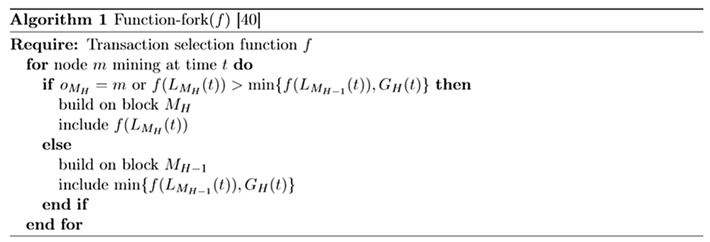

7.3 Transaction Fees（交易费用）
Another class of incentives known as transaction fees are drawn from users’ transactions and awarded to nodes who process that node’s transactions. This can include both the block proposer and/or validator. A primary question in cryptocurrencies is how to choose transaction fees. A common approach—used in Bitcoin and Ethereum, for example—is to allow users to propose their own fees for each transaction. In such a system, miners are incentivized to prioritize high-fee transactions when forming blocks; the higher the transaction fee, the lower the confirmation delay. Most cryptocurrencies also set a minimum transaction fee to prevent users spamming the network with transactions. Two important questions characterize the selection of transaction fees. The first is how to choose the magnitude of transaction fees; namely, should fees be proposed by users, imposed by the system, or some combination thereof? Typical considerations include scaling fees with the transaction’s bytesize, monetary value, or both. The second question is how to allocate fees once they are collected. Recent work has shown that naive (and very common) methods of allocating fees can lead to incentive-incompatibility as well as increased confirmation latency. We begin this section by presenting an industry-standard approach to fee management in Section 7.3.1, and discussing why such an approach is unacceptable for a low-latency payment system. Next, we discuss alternatives, and highlight their advantages and disadvantages 7.3.2.
另一种激励措施被称为交易费用，这来自于用户的交易，并被奖励给处理该节点交易事务的节点。这可能同时包含了出块者和验证者，或者只是二者之一。加密货币的一个首要问题就是如何选择交易费用。例如，比特币和以太坊中使用的一种常见方法是允许用户为每笔交易提出自己的费用。在这种系统中，当产生区块时，鼓励矿工优先处理高收费交易；交易费用越高，确认延迟越低。大多数加密货币还设置了最低交易费用，以防止用户向网络发送垃圾交易。交易费用的选择有两个重要的问题。第一个问题就是如何选择交易费用的量级；也就是说，费用是由用户提出，由系统强制执行，或者是他们的某种组合？典型的考虑因素包括按照交易尺寸，币值或者两者来缩放费用。第二个问题是如何在收集费用后分配费用。 最近的工作表明，分配费用的方法太过于单纯（和非常常见）可能导致激励不兼容以及增加的确认延迟。我们在小节7.3.1中提出了一种行业标准的费用管理方法开始本节，并讨论为什么这种方法对于低延迟的支付系统是不可接受的。接下来，我们讨论替代方案，并在小节7.3.2中突出其优缺点。
7.3.1 \(\quad\) Fee management today（当今的费用管理方法）
Most existing cryptocurrencies allow users to set their own fees; validators choose whether to process a given transaction based on whether the offered transaction fee is high enough. If a miner (or proposer) includes a transaction in a block, that node reaps the full transaction fee as a reward. If a given transaction is not included in a block by any miner after some period of time, that same transaction can be re-broadcast with a higher fee. Although Bitcoin and Ethereum place lower bounds on the size of transaction fees, in practice, users tend to choose substantially higher transaction fees. This natural approach to fee selection is widely adopted, but it has three important negative repercussions: high congestion, high fees, and incentive incompatibility. We begin by describing each of these repercussions more precisely.
大多数现存的加密货币都允许用户自己设定交易费用；验证者根据给出的交易费用是否足够高来选择是否处理一个指定的交易。如果矿工（或者出块者）将一个交易打包到区块中，那个节点收获全部的交易费用作为奖励。如果一个指定的交易在一段时间以后还没有被任何一个矿工打包到区块中去，那么同一个交易可以用更高的费用被重新广播。虽然比特币和以太坊在交易费用的大小上设置了下限，但在实践中，用户实质上倾向于选择更高的交易费用。这种自然的费用选择方法被广泛采用，但它有三个重要的负面影响：高拥堵、高费用和激励不相容。首先我们更准确地描述一下这些后果。
Congestion \(\quad\) Current fee systems contribute critically to congestion. Intuitively, this happens because current mechanisms incentivize validators to choose which transactions to confirm based on transaction fees; this in turn forces users to pay to bypass congestion at equilibrium. To make this statement precise, consider a simplified system in which new blocks are produced as a Poisson process of rate \(µ\), each of which can contain up to \(K\) transactions. Transactions arrive in the system at rate \(λ\), and each transaction offers a transaction fee \(b\), chosen by the user. Let \(c\) denote the (random) cost per unit time of delaying a transaction’s confirmation, with \(c \sim F[0, \overline{c}]\), where \(\overline{c}\) is a positive constant. So if a single transaction’s confirmation is delayed by time \(\Delta\), a delay cost of \(c \Delta\) is incurred. Here \(F(\cdot)\) denotes a cdf with density \(f(\cdot)\) and tail probability \(\overline{F}(c) := 1 - F(c)\).The congestion in the system \(ρ\) is defined as \(\rho := \frac {\lambda} {\mu K}\). Let \(W_K (ρ)\) denote the expected transaction confirmation delay in a system (in blocks) with block size \(K\) and congestion \(ρ\), \(R_K (ρ)\) the total revenue per unit time raised from users, and \(D_K (ρ)\) the total delay cost incurred per unit time. Consider the following result by Huberman et al.:
拥 堵 \(\quad\) 目前的收费系统是引起拥堵的很重要的原因。直观来讲，发生这样的情况是因为现在的机制鼓励验证者可以根据交易费用的大小去选择要确认哪一笔交易；这相应地就会强迫用户在平衡状态时要为了绕过拥堵而支付成本。为了使这个描述更加的准确，考虑这样一个简单的系统，其中新区块的产生是一个速率为 \(μ\) 的泊松过程，每一个区块可以容纳多达 \(K\) 笔交易。交易以 \(λ\) 的速度到达系统，每笔交易提供的交易费是 \(b\)，这是由用户选择的。用 \(c\) 表示单位时间延迟交易确认的（随机）成本，而 \(c \sim F[0, \overline{c}]\)，其中 \(\overline{c}\)为正常数。因此，如果单笔交易的延迟时间是 \(\Delta\)，则会产生 \(c \Delta\) 的延迟成本。这里的 \(F(\cdot)\) 代表一个密度为 \(f(\cdot)\)、尾部概率为 \(\overline{F}(c) := 1 - F(c)\) 的累积分布函数（CDF）。系统的密集度 \(ρ\) 定义为：\(\rho := \frac {\lambda} {\mu K}\) 。我们用 \(W_K (ρ)\) 表示一个区块容量为 \(K\)、密集度为 \(ρ\) 的系统中的预期交易确认延迟，\(R_K (ρ)\) 表示单位时间从用户处获得的总收益，\(D_K (ρ)\) 表示单位时间产生的总延迟成本。以下是Gur Huberman等人的一些结论：
Theorem 3 ([94]). \(\quad\) At equilibrium, if \(ρ = 0\), both revenue and delay cost are \(0\). For all \(ρ \in (0,1)\),
定 理 \(3\) ([94]) \(\quad\) 在均衡条件下，如果密集度 \(ρ = 0\)，收益和延迟成本都是 \(0\)。对于所有的 \(ρ \in (0,1)\)。
\begin{equation} \begin{aligned} R_{K}^{\prime}(\rho) &=K \rho \int_{0}^{\overline{c}} \overline{F}(c)^{2} W_{K}^{\prime}(\rho \overline{F}(c)) d c>0, \\ D_{K}^{\prime}(\rho) &=\frac{R_{K}(\rho)+D_{K}(\rho)}{\rho}>0. \end{aligned} \end{equation}
In other words, both revenue (and with it infrastructure provision by miners) and delay cost are strictly increasing in \(ρ\).
换言之，收益（连带矿工提供的基础设施）和延迟成本是随着密集度 \(ρ\) 而严格递增的。
- A primary, troubling repercussion of this result is that congestion is not merely a side effect of technical scalability challenges. Rather, it is fundamental; validators are not incentivized to work without congestion. As stated in [94]:
An implication of [Theorem 3] is that congestion and delays are necessary for the system to function. Low congestion ρ leads to low delay costs, as blocks are rarely full and each transaction is likely to be processed in the next block. But when blocks are rarely full users have little incentive to pay transaction fees to gain priority, and the system raises little revenue. Without sufficient revenue the number of miners…can become too small, making the system unreliable.
- 这一结果的一个主要的、令人忧虑的影响是，拥堵不仅仅是技术可扩展性挑战的副作用。相反，它是十分重要的；在没有拥堵的情况下，验证者就没有工作的动力。如[94]所述：
-
【定理3】的一个含义是系统的运行需要一定的拥堵和延迟。低密集度ρ导致低延迟成本，因为区块很少是满的，每个交易可能在下一个块中处理。但是，当数据区块很少是满的时，用户很少有动力支付交易费用以获得优先权，而系统也很少增加收入。如果没有足够的收入，矿工的数量…可能会变得太小，使系统不可靠。
This instability among miners under low congestion conditions is discussed more carefully when we consider incentive compatibility. We want to highlight that although [94] was written for the PoW setting, their results are not specific to PoW. Rather, they stem from the combination of three factors: (1) blocks are produced at a constant rate with a limited block size, (2) different transactions give miners (proposers) different reward amounts, and (3) miners get to choose which transactions to include in each block. If a similar fee mechanism were adopted in a PoS system, the same effects would emerge, due to the fact that block times are lower bounded (by protocol and/or by physical constraints). This fundamental relation between congestion and user-selected fees is problematic in a high-throughput payment system.
在我们考虑激励相容性时，更仔细地讨论了低拥堵条件下矿工之间的不稳定性。我们要强调的是，尽管 [94] 是为PoW设置编写的，但它们的结果并不是只特定于PoW。相反，它们是由三个因素组合而成的：（1）区块以固定的速度生产，且区块大小有限；（2）不同的交易给矿工（出块者）不同的奖励金额；（3）矿工可以选择在每个区块中包含哪些交易。如果在一个POS系统中采用类似的收费机制，同样的效果也会出现，因为事实上PoS系统里区块时间的限制较低（受协议和/或物理约束）。在高吞吐量支付系统中，拥堵与用户选择费用之间的这种基本关系是有问题的。
High fees \(\quad\) Another substantial problem with the current fee structure is that fees can be unbounded. Consider the following result from Huberman et al., which considers the same model from the prior discussion on congestion:
高手续费 \(\quad\) 当前的费用结构的另一个实质性问题是费用可以不受限制。考虑Huberman等人得出的以下结果，该结果考虑了之前关于拥堵的讨论得出的相同模型：
Theorem 4 ([94]). \(\quad\) At equilibrium, transaction fees coincide with the payments that result from selling priority of service in a Vickrey-Clark-Groves (VCG) auction.
定理4（[94]） \(\quad\) 在均衡状态下，交易费用与维克里（VCG）拍卖中为销售优先服务支付费用是一个道理。
A well-known property of VCG auctions is that participants are incentivized to bid an amount equal to the externality they impose upon others. This may not be problematic on average, but these amounts can become artificially inflated due to social factors, world events, random fluctuations in system load, etc. Indeed, in December of 2017, Bitcoin fees exceeded $20 per transaction [92]. This volatility and unboundedness is explicitly at odds with the requirements of a payment system. Merchant adoption hinges critically on the guarantee that fees will not grow beyond a maximum threshold; this point has been touted as a primary reason why cryptocurrencies can never replace fiat money [164].
VCG拍卖的一个众所周知的特点是，参与者被激励出价，其金额等于他们强加给其他人的外部效应。平均而言，这可能没有问题，但由于社会因素、世界事件、系统负载的随机波动等原因，这些金额可能会被人为膨胀。事实上，2017年12月，比特币收费一度超过每笔交易20美元[92]。这种波动性和不确定性显然与支付系统的要求不符。商家的采用主要取决于保证费用不会超过最大阈值；这一点已经被吹捧为加密货币永远无法取代法币的主要原因[164]。
A key observation is that whereas congestion arises mainly because of the way fees are disbursed, high or volatile fees result from a combination of two factors: first, fees are proposed by users. Second, validators receive higher rewards for transactions with higher fees, and choose which transactions to include. It is this combination that leads to the VCG result, which in turn leads to unpredictable fees. Hence, any solution to this problem should tackle both factors; it is not enough to simply change the way that fees are disbursed.
一个关键的注意点是，鉴于拥堵主要是因为交易费的支付方式造成的，高或不稳定的费用是由两个因素的综合造成的结果：第一，费用是由用户提出的；第二，验证者可以从收费较高的交易中获得更高的奖励，并可以选择要打包哪些交易。正是这两者的结合导致了 VCG 的结果，从而导致了不可预测的费用。因此，任何解决这个问题的方法都应该同时解决这两个因素；仅仅改变费用的支付方式是不够的。
Incentive incompatibility \(\quad\) A third critical repercussion of the current approach to transaction fee management is incentive incompatibility. In particular, in underutilized systems, it can introduce undesirable equilibria in terms of proposal strategies. Carlsten et al. show that in the absence of inflation, rational Bitcoin miners are no longer incentivized to mine on the longest chain [40]. The intuition is that if miners are only collecting transaction fees, then they are incentivized to include as many transactions as possible in each block. This means that right after a block is mined, the number of transactions available for inclusion in the next block is minimal, as is the associated reward. Thus, when choosing between forks, miners are incentivized to adopt one with fewer transactions in the final block, since such forks leave more transaction fees for the next miner. By exploiting this observation, selfish miners can convince other miners to build on side chains.
激励不相容 \(\quad\) 当前的交易费用管理方法的第三个重要影响是激励不相容。特别是，在未充分利用的系统中，它可以在提案策略方面引起一些不需要的平衡。Carlsten等人表明在没有通货膨胀的情况下，理性的比特币矿工不再被激励到最长链上挖矿[40]。直觉地，如果矿工只收取交易费用，那么他们会被激励在每个区块中尽可能多地打包交易。这意味着在一个区块刚被挖出之后，可以包含在下一个块中的交易数量是最小的，相关的奖励也是最小的。因此，当在不同的分叉之间进行选择时，矿工被鼓励采用最终区块中交易费用较少的分叉，因为此类分叉会为下一个矿工留下更多的交易费用。通过利用这种言论，自私挖矿者可以说服其他矿工建立侧链。
More precisely, [40] shows the existence of equilibria that do not involve honest mining. Their model is as follows: consider a constant stream of incoming transactions. For any time interval \(\mathcal {T} = [t_1,t_2]\), let \(g(\mathcal {T}) = t_2 - t_1\) denote the fees accumulated by the transactions in interval \(\mathcal {T}\) (i.e. one unit of fees per unit time). Notice that the model considers transactions as continuous quantities that can be infinitesimally split between miners. Because of the one-to-one correspondence between transaction times and associated fees, we will interchangeably allow \(\mathcal {T}\) to denote both a time interval and a set of transactions; the meaning should be clear from context. Suppose there is no network latency, and no limit on block size (equivalently, there are few enough transactions in the system that a miner can always include all outstanding transactions in the next block). For a block \(B\), let \(o_B\) denote the node that proposed block \(B\). A key assumption is that when a miner mines a block at time t on block \(B\), it can choose to include any subset \(\mathcal{T}^{\prime} \subseteq[0, t]\) of outstanding transactions in the new block, thereby collecting fees \(g(\mathcal{T}^{\prime}) = \left|\mathcal{T}^{\prime}\right|\). Let \(L_B (t)\) denote the amount of outstanding transactions in interval \([0,t]\), i.e., transactions that have not been claimed by \(B\) or its predecessors. For an amount of outstanding transactions \(L_B (t)\), suppose agents use function \(f(L_B (t))\) to determine how many transactions to consume in the next block. The authors also assume that if the chain has height \(H\), a miner will either build on the chain at height \(H+1\) or fork the last block, and build a conflicting block at height \(H\); let \(H_B\) denote the height of block \(B\). Let \(M_H\) denote the block at height \(H\) that leaves the most unclaimed transactions, i.e.,
更准确地说，[40]显示了存在一种不涉及诚实采矿的平衡。他们的模型如下：考虑一个持续的交易输入流。在任意的时间间隔 \(\mathcal {T} = [t_1,t_2]\) ，我们用 \(g(\mathcal {T}) = t_2 - t_1\) 表示在时间间隔 \(T\) 内的交易所累积的费用（即每单位时间收取一个单位的费用）。请注意，该模型将交易看作是可以在矿工之间进行无限小分割的连续数量。由于交易时间和相关费用之间的一对一对应关系，我们将允许 \(T\) 可互换地去表示一个时间间隔和一组交易；其含义应从上下文中明确。假设没有网络延迟，也没有对区块大小的限制（相当于，系统中的交易足够少，矿工总是可以在下一个区块中包含所有未完成的交易）。对于一个区块 \(B\)，我们用 \(o_B\) 来代表为区块 \(B\) 做提案的节点。一个关键的假设是，当一个矿工在时间t内从区块 \(B\) 上挖出一个块时，它可以选择在新的区块中包含任何未完成交易的子集 \(\mathcal{T}^{\prime} \subseteq[0, t]\)（即时间区间\([0,t]\)内的任何交易组），从而收取费用 \(g(\mathcal{T}^{\prime}) = \left|\mathcal{T}^{\prime}\right|\)。我们用 \(L_B (t)\) 来表示时间间隔 \([0,t]\) 内未完成交易的数量，也就是，还未被区块B或其父块广播的交易。对于大量未完成的交易 \(L_B (t)\)，假设代理使用函数 \(f(L_B (t))\) 来确定下一个区块中要消耗多少交易。作者还假设，如果链的高度为 \(H\)， 矿工要么在链高度 \(H+1\) 上建立新区块，要么分叉上一个区块，在高度\(H\) 建造一个争议区块；用\(H_B\) 来表示区块 \(B\) 的高度。用 \(M_H\) 来表示在块高度为 \(H\) 时留下最大未广播交易的那个区块，即：
\begin{equation} M_{H} = \arg \max_{B} \{L_{B}(t) : H_{B} = H \}. \end{equation}
（即 \(M_H\) 就是在区块高度 \(H_B=H\)、使得函数 \(L_B (t)\) 取得最大值的那个区块 \(B\)，区块 \(B\) 只是一个泛指的区块。）
Similarly, let \(G_H (t) = L_{M_{H-1}} (t) - L_{M_H} (t)\) denote the gap between the most unclaimed fees available at height \(H-1\) and the most unclaimed fees at height \(H\). [40] considers a class of strategies where each miner chooses (a) which block to build on, and (b) how many transactions to consume in their block. Algorithm 1 describes this procedure.
同样，我们用 \(G_H (t) = L_{M_{H-1}} (t) - L_{M_H} (t)\) 表示在块高度 \(H-1\) 的最大未广播费用与在高度 \(H\) 的最大未广播费用之间的差额。[40]考虑了一类策略，其中每个矿工选择（a）在哪个块上构建新块，以及（b）在其块中消耗多少交易。算法 \(1\) 正好描述了这个过程。

Theorem 5 ([40]). \(\quad\) For any constant \(y\) such that \(2 y - \ln (y) \geq 2\), define
定 理 5（[40]）. \(\quad\) 对于满足 \(2 y - \ln (y) \geq 2\) 的任意常数 \(y\)，定义：
\begin{equation} f(x) = \left \{ \begin{array}{ll}{x} & {\text { if } x \leq y} \\ {-W_{0} \left(-y e^{x-2 y}\right)} & {\text { if } x \in (y, 2 y-\ln (y)-1)} \\ {1} & {\text { else }}\end{array}\right. \quad \quad \quad \quad \quad \quad (7.24) \end{equation}
where \(W_0 (·)\) denotes the upper branch of the Lambert W function which satisfies \(W_0 (x e^x )=x\) for all \(x \in [-1/e,├ ∞)\). Then it is an equilibrium for every miner to mine with strategy Function-fork(f) (Algorithm 1) as long as every miner is non-atomic, and miners only mine on top of chains of length H or H −1, where H denotes the length of the longest chain in the system. Furthermore, in such an equilibrium, the expected number of unconfirmed transactions at time n∈R scales as Ω(√n).
式中，W_0 (·) 表示Lambert W函数的上分支，对于所有的 x∈[-1/e,├ ∞)，它满足 W_0 (xe^x )=x。然后，使用fork函数f作为挖矿策略（算法1），这对于每一个矿工都是一种平衡，只要每个矿工都是非原子级的，并且矿工们只在链长度H或者H-1上挖矿，其中H代表系统中最长链的长度。此外，在这种均衡中，在时间 n∈R 内，未确认交易的预期数量用 Ω(√n) 来衡量。